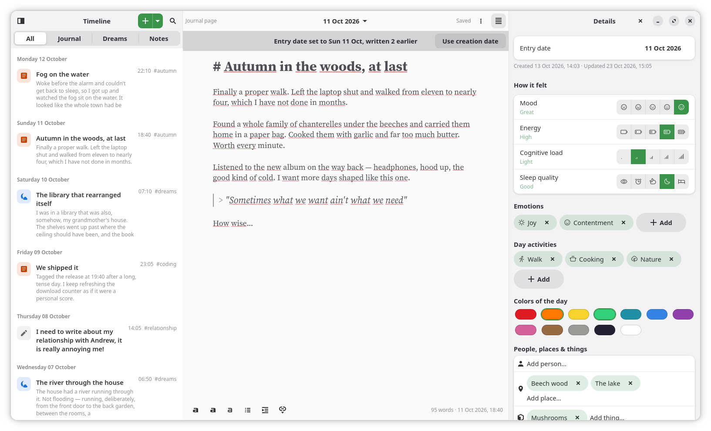
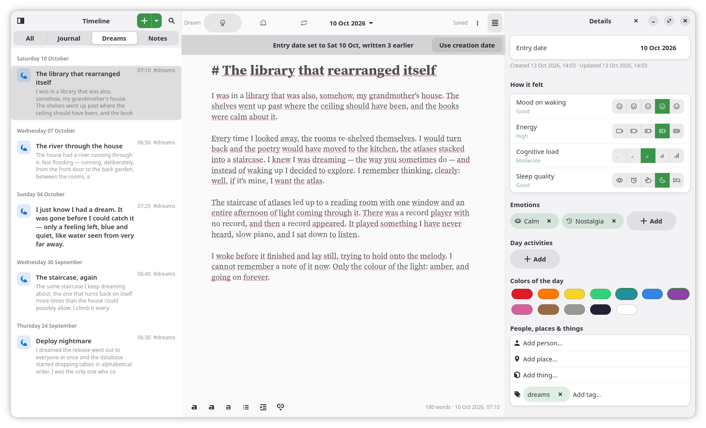
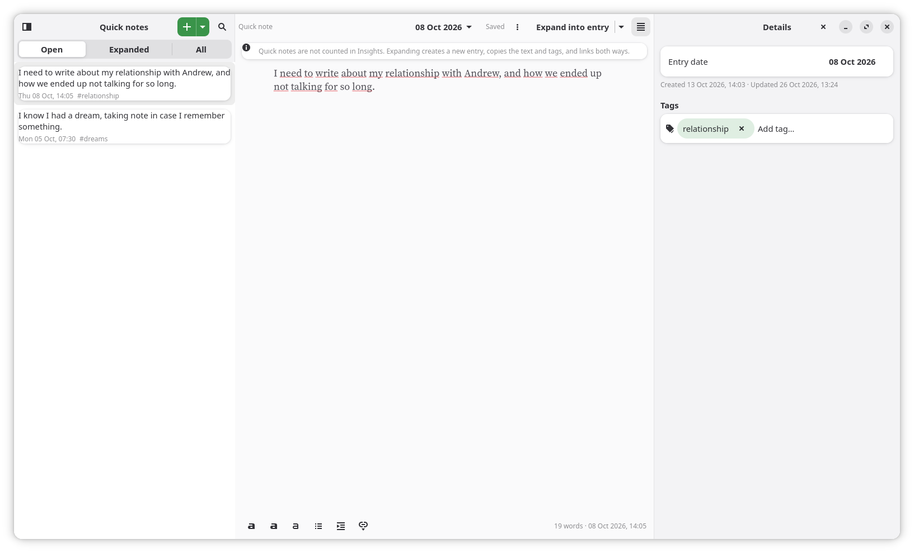
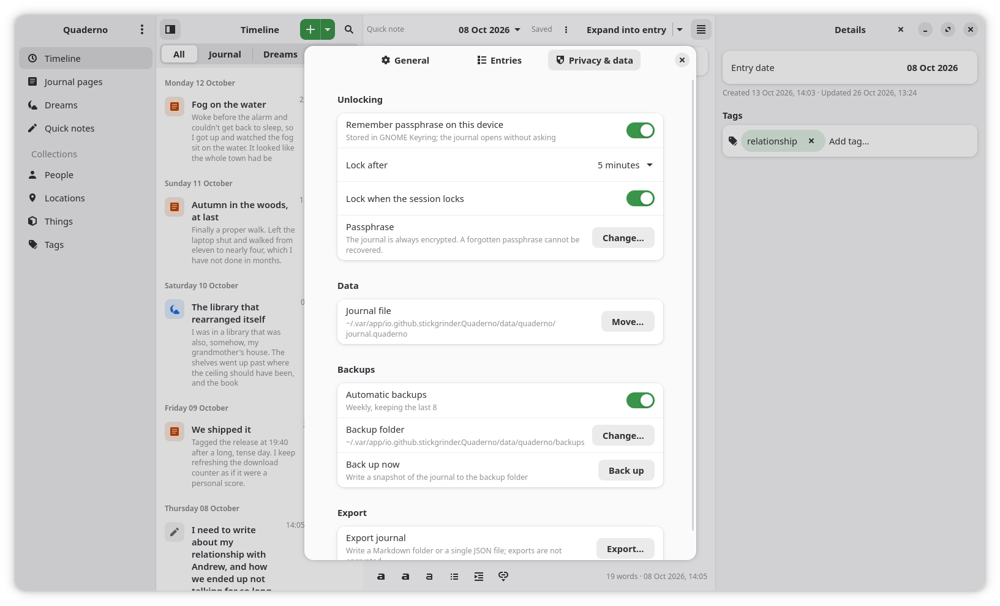

Three ways to write
Journal pages for the day, dreams with their mood on waking, and quick notes to expand later.
A private journal for GNOME
Journal pages, dreams and quick notes in one encrypted file on your device. No account. No server. No network.
Free software, GPL-3.0-or-later Flatpak, Debian, Ubuntu, Fedora, tarball

What it does
Write a day, record a dream, or catch a thought. Add as much or as little detail as you want; Quaderno stays out of the way.
Journal pages for the day, dreams with their mood on waking, and quick notes to expand later.
Ratings, emotions, activities, colours, people, places, things and tags sit in a details panel—there when you need them, gone when you don’t.
Journal pages, dreams and notes live together in one timeline. Filter by type, or search text, names and labels. Search indexes stay in memory.
Markdown with a real writing font, spell checking and a dimmed punctuation scheme. It follows your system theme.
Automatic encrypted backups and an export to Markdown or JSON. Your words are yours, and the file format is public.
GTK4 and libadwaita, keyboard shortcuts, the system theme, English and Italian. It will never be a web or Electron app.
A look inside
Three kinds of entries, one timeline, and a details panel that stays out of the way until you need it.



The promise
Quaderno is built around one rule: what you write is nobody else’s business. There is no cloud, no account, and no plaintext mode.
Read the public file formatThe whole journal is a single SQLCipher database, normally journal.quaderno.
No telemetry, no update checks, no remote content. The app makes no network requests of any kind.
Search indexes are built after unlock and dropped on lock. No plaintext cache, thumbnail or temporary copy is left behind.
If you lose the passphrase, the journal is gone. Quaderno says so when you create a vault.
Get Quaderno
Built from the tagged source by GitHub Actions. Choose the package for your system, or take the Flatpak bundle.
Recommended
One bundle, installed for your user. The same build will go to Flathub.
flatpak install quaderno-0.1.0-x86_64.flatpakRequires org.gnome.Platform//50 from Flathub.
All files are also on the 0.1.0 release page. Flathub and AUR are planned after the first releases.